Master how to visualize relationships between two continuous numerical variables, detect positive and negative associations, spot natural clusters and outliers, encode 3rd and 4th dimensions via bubble size and colorbars, and avoid the correlation vs causation fallacy.
Scatter plot mein har observation ek single dot (point) ki tarah represent hota hai. Iska mental model ek Student Profile Sheet ki tarah hota hai jahan X-coordinate student ke daily study hours batata hai aur Y-coordinate usi student ke final exam marks.
| Chart Type | X-Axis Variable Type | Y-Axis Variable Type | Primary Objective |
|---|---|---|---|
| Scatter Plot | Continuous Numerical | Continuous Numerical | Correlation, relationships, clusters, outliers |
| Line Plot | Sequential / Chronological Time | Continuous Numerical | Tracking change over time (trends) |
| Bar Chart | Discrete Categorical Group | Numerical Metric | Comparing quantities across categories |
30 students ke reproducible dataset par study hours aur marks ka relationship observe karte hain:
import matplotlib.pyplot as plt import numpy as np # 30 Students Reproducible Study Hours & Exam Marks hours = np.array([1.5, 2.0, 2.2, 2.5, 2.8, 3.0, 3.2, 3.5, 3.8, 4.0, 4.2, 4.5, 4.8, 5.0, 5.2, 5.5, 5.8, 6.0, 6.2, 6.5, 6.8, 7.0, 7.2, 7.5, 7.8, 8.0, 8.2, 8.5, 8.8, 9.0]) noise = np.array([-3, 2, -1, 4, -2, 1, -4, 3, 0, -2, 3, -1, 2, -3, 4, 1, -2, 3, 0, -1, 2, -4, 1, 3, -2, 0, -1, 2, -3, 1]) marks = np.clip(42 + (hours * 5.8) + noise, 40, 98) fig, ax = plt.subplots(figsize=(8.5, 4.8), dpi=150) ax.scatter(hours, marks, color='#0284c7', s=70, edgecolor='#0369a1', linewidth=1.5, alpha=0.85, label='Student Record') # Best-fit trendline m, b = np.polyfit(hours, marks, 1) ax.plot(hours, m*hours + b, color='#dc2626', linestyle='--', linewidth=2, label='Linear Trend (Positive Association)') ax.set_title('30 Students: Daily Study Hours vs Exam Marks', fontsize=13, fontweight='bold') ax.set_xlabel('Daily Study Hours', fontsize=11, fontweight='bold') ax.set_ylabel('Exam Marks (out of 100)', fontsize=11, fontweight='bold') ax.grid(True, linestyle='--', alpha=0.5) ax.legend(loc='upper left') fig.tight_layout() plt.show()
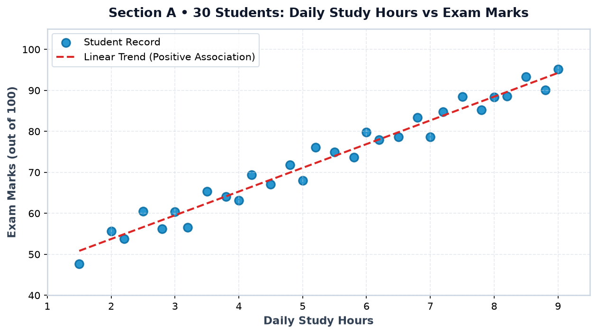
Workout duration aur calories burned ka relationship observe karna:
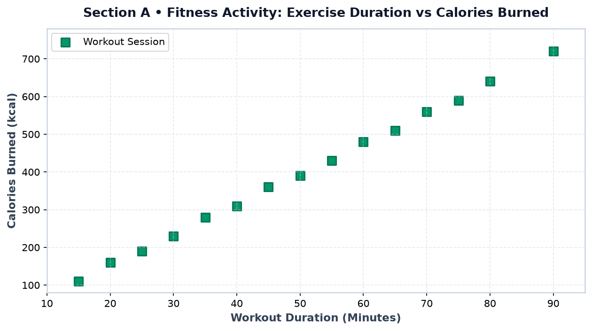
plt.scatter() vs ax.scatter()Matplotlib do interfaces provide karta hai. Dono methods mein x aur y arrays ki length strictly identical honi chahiye.
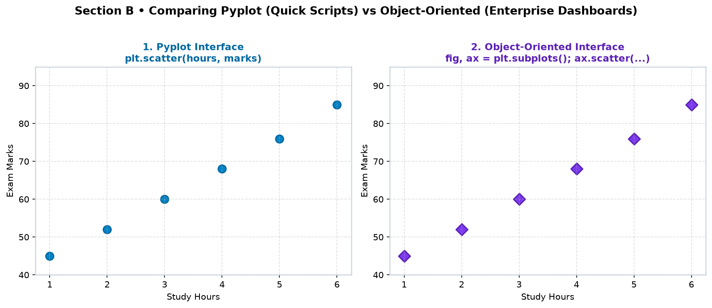
Server room sensors se aane wale temperature aur relative humidity readings ko OO interface se plot karna:
import matplotlib.pyplot as plt import numpy as np temp = np.array([18.5, 20.2, 21.8, 23.5, 25.1, 26.8, 28.4, 30.2, 32.5, 34.1, 35.8]) humidity = np.array([78, 74, 71, 65, 62, 58, 54, 49, 44, 40, 36]) fig, ax = plt.subplots(figsize=(8.5, 4.8), dpi=150) ax.scatter(temp, humidity, color='#d97706', s=80, marker='^', edgecolor='#b45309', linewidth=1.5, label='IoT Sensor Readings') ax.set_title('IoT Server Room: Temperature vs Relative Humidity', fontsize=13, fontweight='bold') ax.set_xlabel('Ambient Temperature (C)', fontsize=11, fontweight='bold') ax.set_ylabel('Relative Humidity (%)', fontsize=11, fontweight='bold') ax.grid(True, linestyle='--', alpha=0.5) ax.legend(loc='upper right') fig.tight_layout() plt.show()
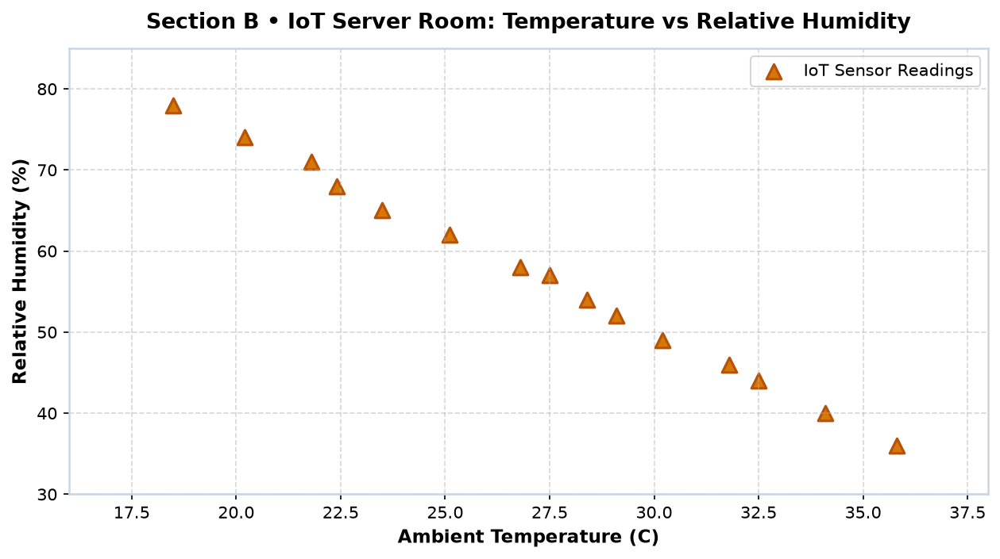
Scatter plot inspect karte waqt ek data analyst ko 4 fundamental visual patterns pehchanne hote hain:
Jab X badhne ke sath Y bhi consistently badhta hai (e.g. Ad Spend badhne se Store Sales badhti hain):
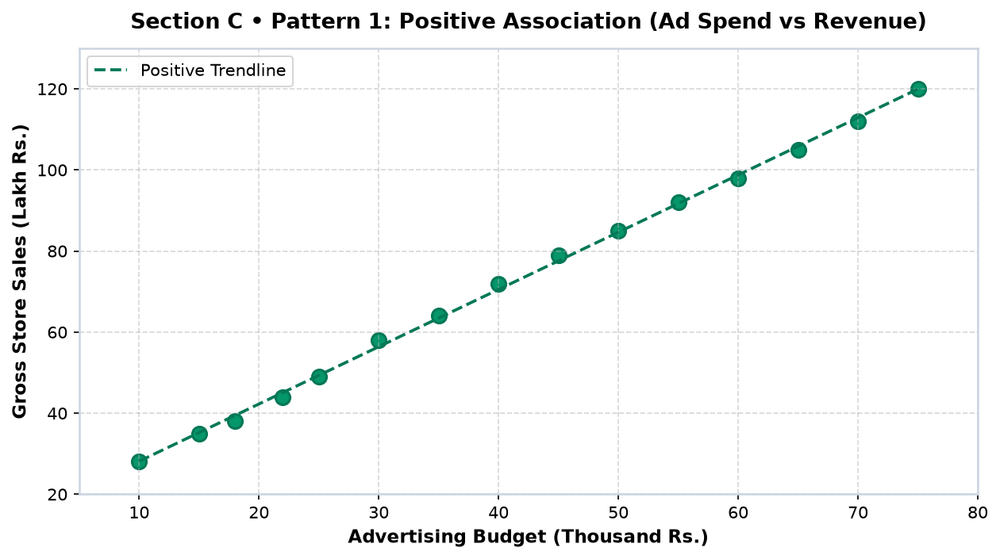
Jab X badhne se Y consistently ghirta hai (e.g. Cruising speed badhane se total travel time kam hota hai):
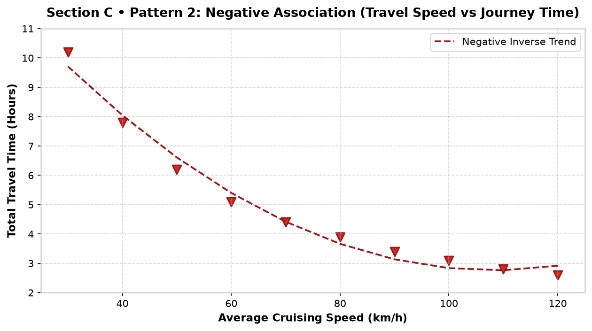
Jab points bina kisi directional slope ke random cloud ki tarah bikhre hote hain (e.g. Student Shoe Size vs Exam Score):
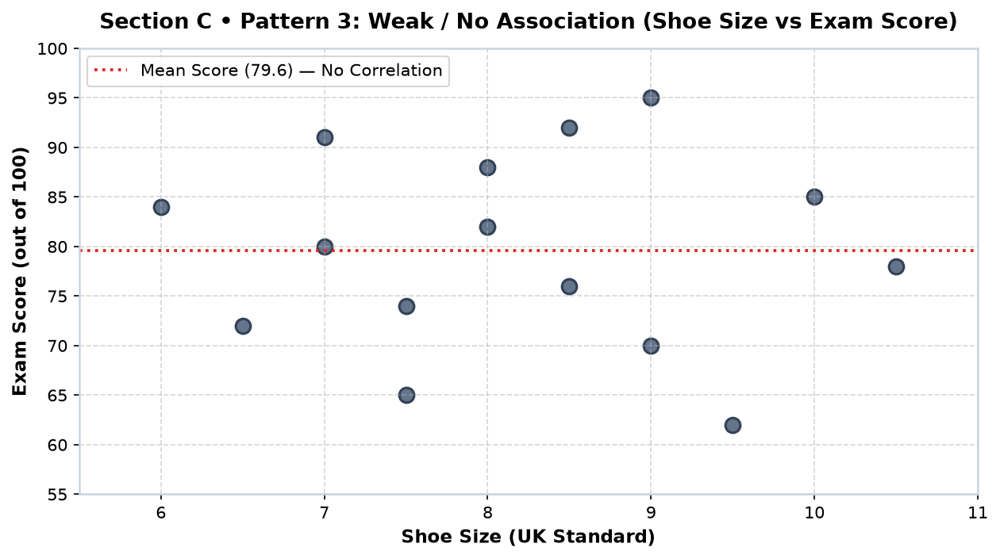
Relationship hamesha straight line nahi hoti! E.g. Engine RPM vs Fuel Mileage mein mileage 2200–2500 RPM par peak karti hai aur uske baad drop hone lagti hai:
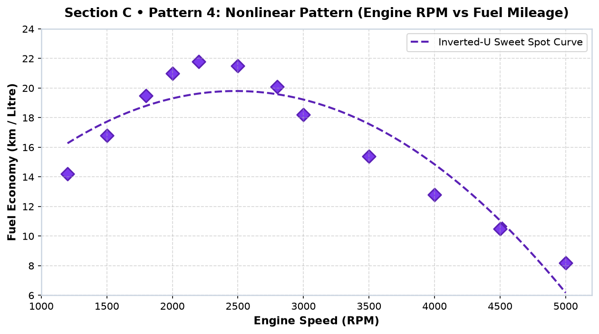
Scatter points ko visually distinctive aur readable banane ke 6 key parameters:
color / c: Fill color hex code (e.g. '#0284c7').s: Point ka physical area in points squared (standard: 60 to 120).marker: Point shape ('o' circle, 's' square, '^' triangle, 'D' diamond, 'h' hexagon).edgecolors: Outer boundary ring color (e.g. '#0f172a').linewidths: Boundary ring ki thickness in points (standard: 1.2 to 2.0).alpha: Point transparency level (0.0 to 1.0).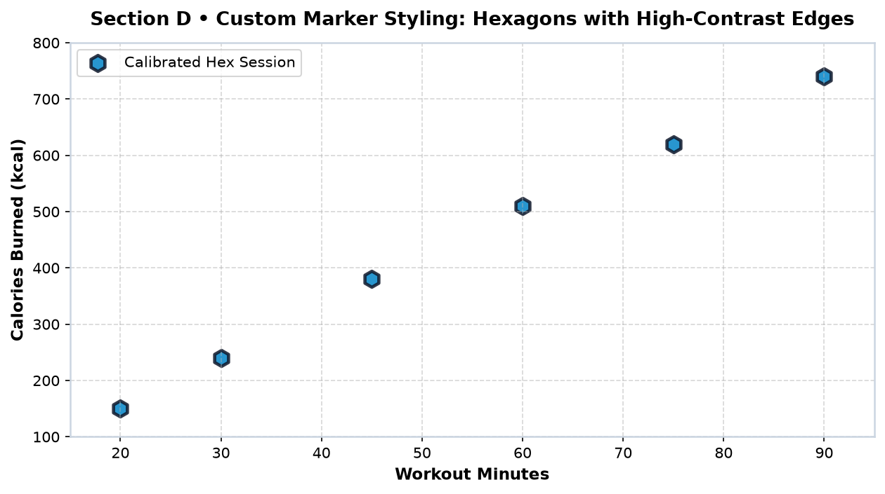
marker='h') with high-contrast dark boundary edges (edgecolors='#0f172a').Website weight (MB) aur Core Web Vitals threshold (3.0s) ka relationship:
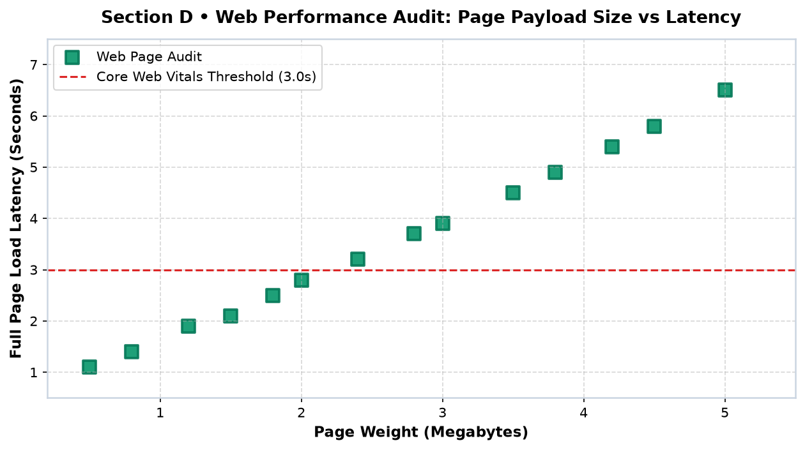
Scatter plot mein X aur Y ke alawa ek 3rd numerical variable ko marker size (s) ke through encode kiya ja sakta hai. Isse hum Bubble Chart kehte hain.
s point ke Area (points squared) ko represent karta hai, na ki diameter ya radius ko! Isliye agar data value 10 se 20 ho jaye (double), toh area double hota hai, jo visual perception ke liye mathematically accurate hai. Real values ko reasonable range (50 to 500 pt²) mein scale karna standard practice hai.
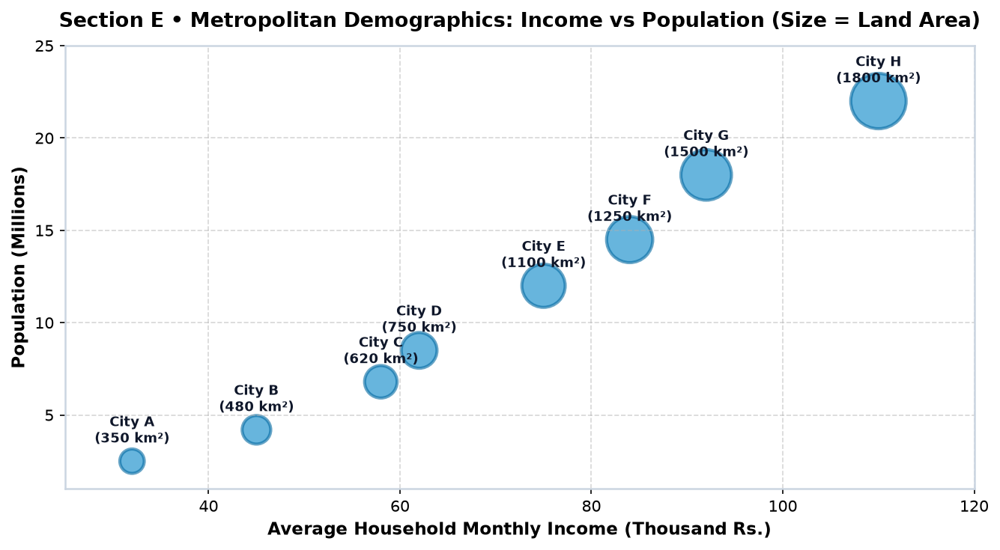
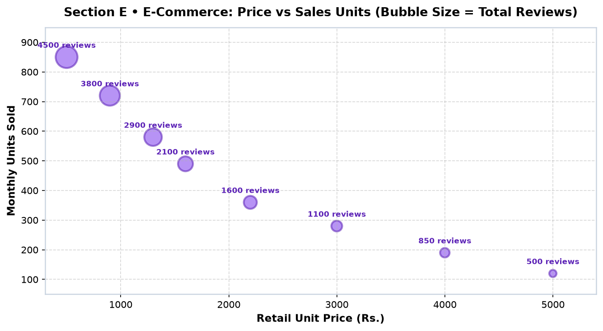
Color ko 3rd dimension banate waqt variable ki type identify karna critical hai:
| Color Encoding Type | Data Nature | Matplotlib Syntax | Legend / Scale Guide |
|---|---|---|---|
| Categorical Color | Discrete groups (Branches, Depts, Batches) | Distinct `color` per `scatter()` call | Discrete ax.legend() |
| Continuous Color | Smooth numbers (AQI, Temperature, Ratings) | Pass numeric array to c=... with cmap='viridis' | Continuous fig.colorbar(scatter) |
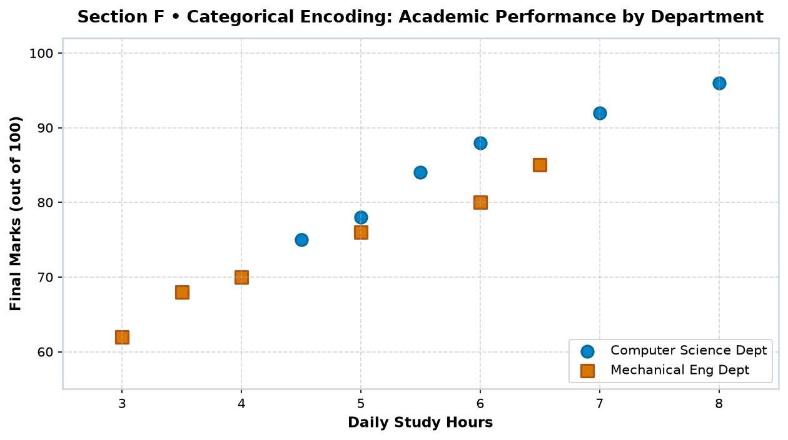
Continuous color scale ke liye c=aqi, cmap='viridis' aur fig.colorbar() use karna:
import matplotlib.pyplot as plt import numpy as np temp = np.array([21, 23, 24, 26, 27, 29, 31, 33, 35, 36, 28, 30, 32, 34]) humidity = np.array([75, 72, 68, 64, 60, 56, 52, 48, 44, 40, 58, 54, 50, 45]) aqi = np.array([45, 52, 68, 85, 95, 115, 135, 155, 175, 195, 105, 125, 145, 165]) fig, ax = plt.subplots(figsize=(9.5, 5), dpi=150) scatter = ax.scatter(temp, humidity, c=aqi, cmap='viridis', s=90, edgecolors='#0f172a', linewidths=1.2, alpha=0.9) cbar = fig.colorbar(scatter, ax=ax) cbar.set_label('Air Quality Index (AQI Level)', fontsize=10.5, fontweight='bold') ax.set_title('Continuous Color Mapping: Temp vs Humidity (Color = AQI)', fontsize=13, fontweight='bold') ax.set_xlabel('Ambient Temperature (C)', fontsize=11, fontweight='bold') ax.set_ylabel('Relative Humidity (%)', fontsize=11, fontweight='bold') ax.grid(True, linestyle='--', alpha=0.5) fig.tight_layout() plt.show()
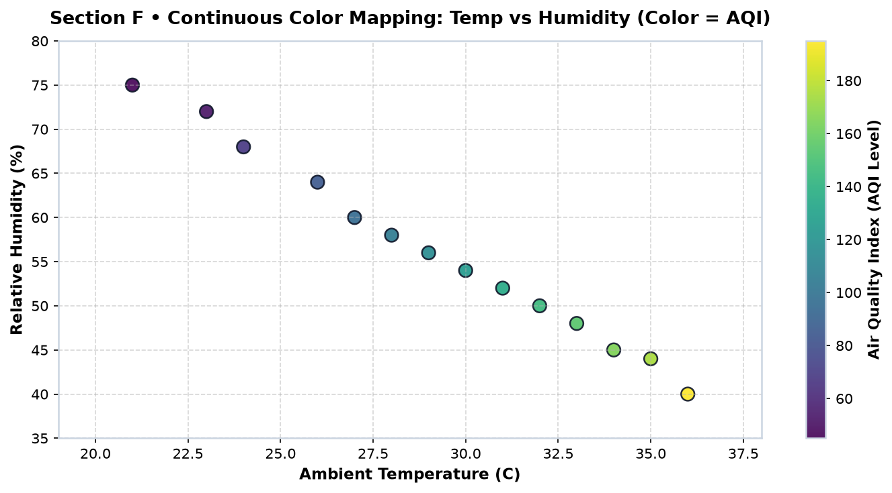
Do different cohorts ko same scale par compare karne ke liye hum ek hi ax object par multiple `scatter()` calls execute karte hain:
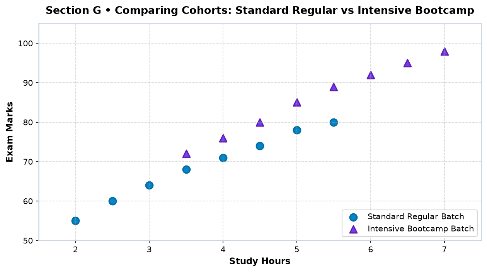
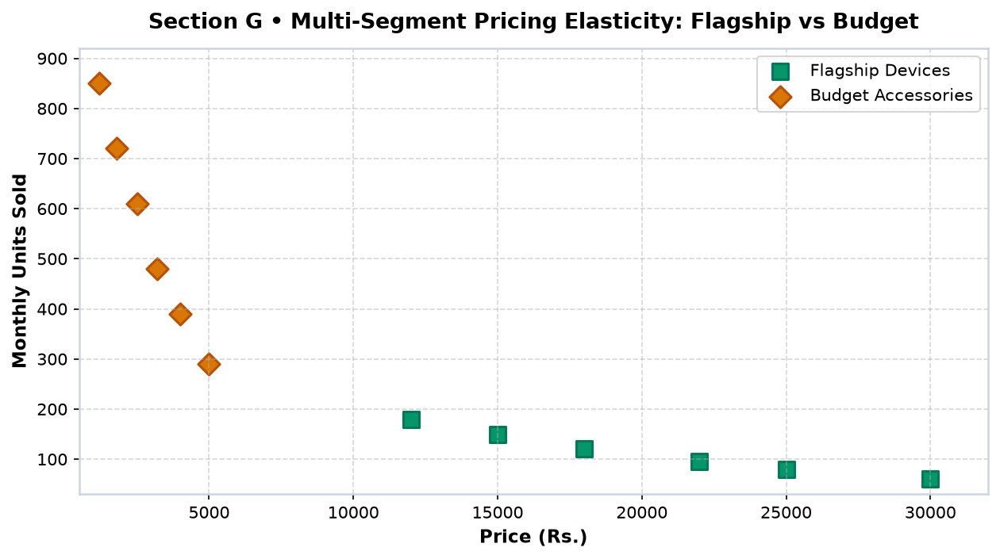
Jab dataset mein thousands of records hote hain, toh points ek doosre ke upar overlap ho kar ek solid dark blob ban jate hain. Is problem ko Overplotting kehte hain.
alpha=0.2 se 0.3 set karne se single points light dikhte hain, lekin jahan points densely overlap hote hain wahan color automatically intensify hokar dark core ban jata hai! Isse actual concentration visually reveal ho jati hai.
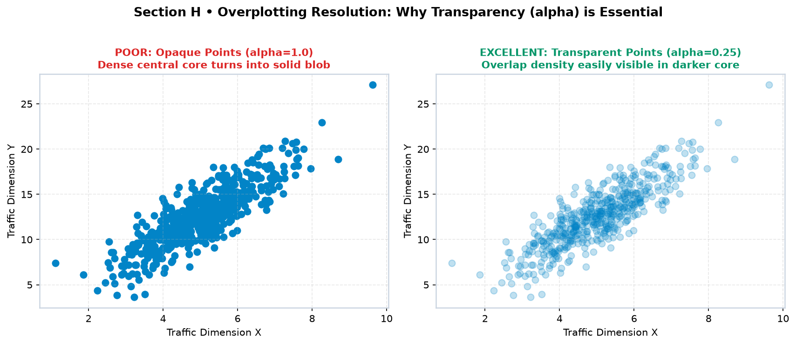
alpha=0.25 cleanly reveals the high-density central core.Scatter plot data exploration ka primary tool isliye hai kyunki yeh human eye ko Grouping Cohorts (Clusters) aur Anomalies (Outliers) instantly dikha deta hai.
Student batch natural groups mein divide ho jata hai: Remedial Support (Low-Low), Core Average (Mid-Mid), aur Honors Track (High-High):
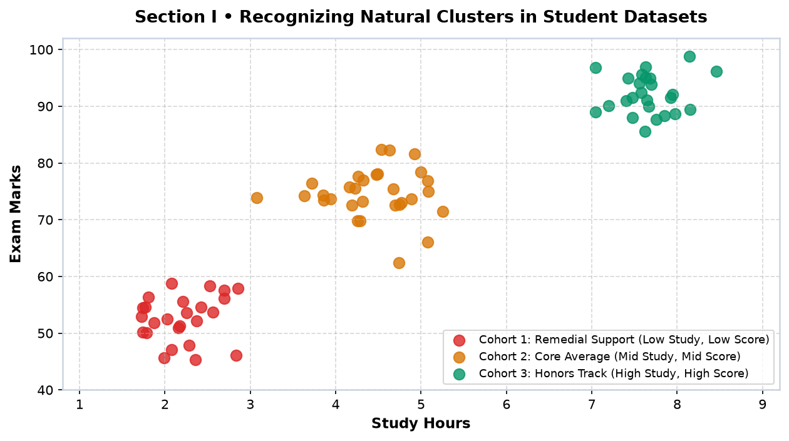
Agar koi point general trend se bohot door hai (e.g. 2 din mein fast delivery lekin 1.2 star rating), toh usse bug ya fraud samajhkar chupchap delete mat karo — pehle root cause investigate karo!
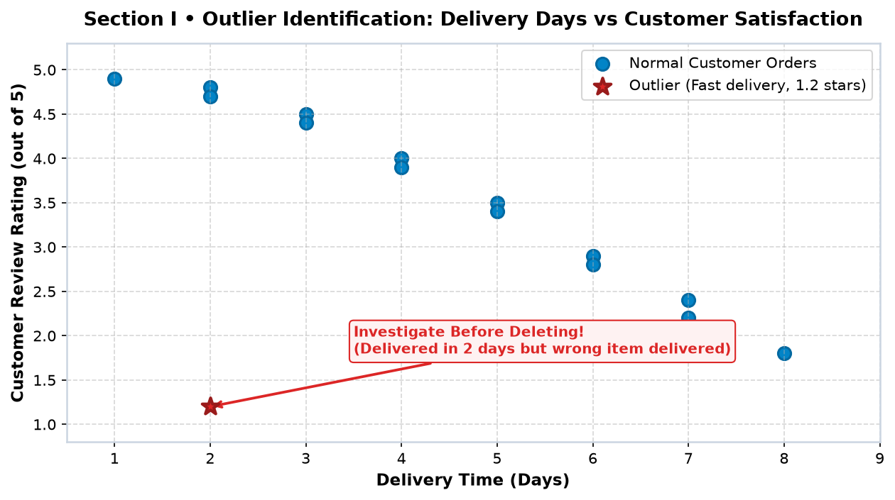
Specific data points ko explain karne ke liye ax.annotate() aur governance thresholds ke liye ax.axhline() / ax.axvline() use kiya jata hai.
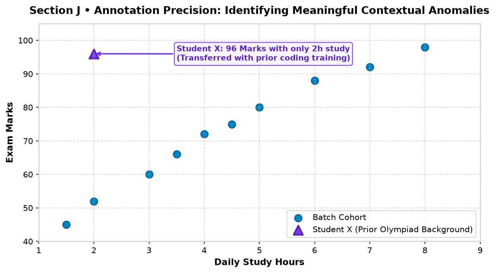
ax.annotate() explaining Student X's background Olympiad knowledge.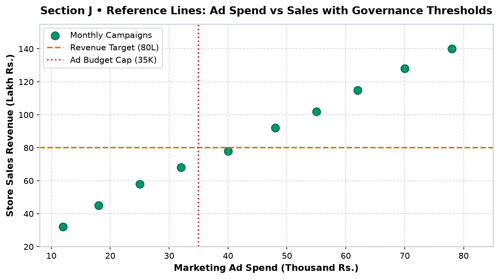
Scatter plots implement karte samay aane wale 12 most frequent beginner errors:
| # | Common Mistake | Incorrect Code | Correct Code & Fix |
|---|---|---|---|
| 1 | Array dimension mismatch (ValueError) |
x = [1, 2, 3] |
len(x) == len(y) ensure karo. Har observation ka matching coordinate hona mandatory hai. |
| 2 | Confusing s with marker diameter |
s = 100 assuming 100px diameter |
s marker ka area in points squared hota hai. 10pt diameter ke liye s=100 hota hai. |
| 3 | Passing continuous numbers to color instead of c |
ax.scatter(x, y, color=aqi_array) |
Continuous numbers ke liye hamesha c=aqi_array, cmap='viridis' use karo. |
| 4 | Forgetting the colorbar label | fig.colorbar(scatter) without title |
Always call cbar.set_label('Metric Name (Units)') so viewers understand the scale. |
| 5 | Overplotting blindness with dense data | 10,000 opaque points at alpha=1.0 |
Set alpha=0.1 to 0.3 and reduce marker size so overlapping density becomes visible. |
| 6 | Connecting scatter points with lines | Calling plt.plot(x, y) on unordered scatter observations |
Use plt.scatter()! Only trendlines or regressions should be lines. |
| 7 | Assuming Correlation implies direct Causation | "X badha toh Y isi ki wajah se badha." | Correlation shows co-occurrence, NOT direct causality. Highlight external variables. |
| 8 | Deleting apparent outliers silently | Filtering out unusual rows before analysis | Investigate data collection context first. Outliers often carry the most valuable business insights! |
| 9 | Categorical colors without a legend | Multiple colors used with no explanation | Always provide label='...' and call ax.legend() for categorical groups. |
| 10 | Linear trendline on nonlinear data | Fitting straight line on U-shaped curve | Inspect scatter cloud visually; use polynomial regression for curvilinear patterns. |
| 11 | Hardcoded unscaled bubble sizes | s = population (e.g. 5,000,000) |
Scale bubble metric into standard 40 to 400 pt² range. |
| 12 | Missing axis labels and physical units | Axis labelled only "X" and "Y" | Always specify clear metric name and units: e.g. "Ambient Temperature (°C)". |
Ek complete multi-variable student research dashboard create karte hain:
plasma spectrum.import matplotlib.pyplot as plt import numpy as np hours = np.array([1.5, 2.0, 2.5, 3.0, 3.5, 4.0, 4.5, 5.0, 5.5, 6.0, 6.5, 7.0, 7.5, 8.0, 8.5]) marks = np.array([48, 54, 60, 65, 72, 75, 80, 82, 86, 89, 92, 94, 96, 98, 99]) questions = np.array([20, 25, 35, 45, 60, 70, 85, 95, 110, 130, 150, 175, 200, 220, 250]) sizes = questions * 1.1 # Scaled area fig, ax = plt.subplots(figsize=(10, 5.5), dpi=150) scatter = ax.scatter(hours, marks, s=sizes, c=questions, cmap='plasma', edgecolors='#0f172a', linewidths=1.2, alpha=0.85) cbar = fig.colorbar(scatter, ax=ax) cbar.set_label('Coding Practice Problems Solved', fontsize=10.5, fontweight='bold') ax.axhline(75, color='#dc2626', linestyle='--', linewidth=1.5, label='First Class Honors Benchmark (75%)') ax.set_title('Mini Project 1: Multi-Dimensional Student Cognitive Performance Analysis', fontsize=13, fontweight='bold') ax.set_xlabel('Daily Study Hours Invested', fontsize=11, fontweight='bold') ax.set_ylabel('Exam Marks (out of 100)', fontsize=11, fontweight='bold') ax.set_xlim(1.0, 9.2) ax.set_ylim(40, 105) ax.grid(True, linestyle='--', alpha=0.5) ax.legend(loc='lower right') fig.tight_layout() plt.show()
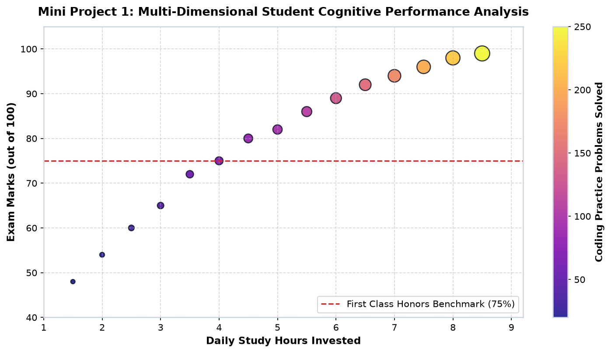
Retail store ke 12 core products ka pricing elasticity matrix create karte hain:
viridis colormap.import matplotlib.pyplot as plt import numpy as np price = np.array([299, 499, 799, 999, 1499, 1999, 2499, 2999, 3999, 4999, 6999, 8999]) units_sold = np.array([920, 840, 750, 680, 520, 430, 360, 290, 210, 160, 95, 65]) ratings = np.array([4.2, 4.4, 4.6, 4.5, 4.8, 4.7, 4.9, 4.6, 4.8, 4.9, 4.7, 4.9]) fig, ax = plt.subplots(figsize=(10, 5.5), dpi=150) scatter = ax.scatter(price, units_sold, c=ratings, cmap='viridis', s=120, edgecolors='#0f172a', linewidths=1.5, alpha=0.9) cbar = fig.colorbar(scatter, ax=ax) cbar.set_label('Customer Star Rating (out of 5)', fontsize=10.5, fontweight='bold') ax.set_title('Mini Project 2: E-Commerce Catalog Pricing Elasticity & Satisfaction Matrix', fontsize=13, fontweight='bold') ax.set_xlabel('Product Retail Price (Rs.)', fontsize=11, fontweight='bold') ax.set_ylabel('Monthly Units Sold', fontsize=11, fontweight='bold') ax.set_xlim(100, 9500) ax.set_ylim(30, 1000) ax.grid(True, linestyle='--', alpha=0.5) fig.tight_layout() plt.show()
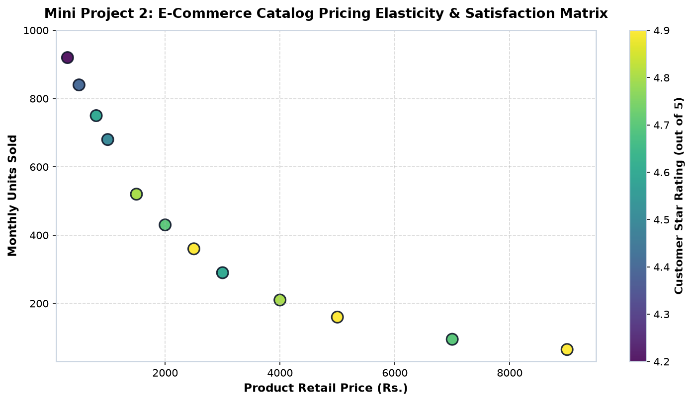
import matplotlib.pyplot as plt import numpy as np pace = np.array([6.2, 6.0, 5.8, 5.5, 5.3, 5.1, 4.9, 4.7, 4.5, 4.2]) heart_rate = np.array([132, 138, 144, 150, 155, 161, 166, 172, 178, 185]) elevation = np.array([10, 15, 20, 25, 30, 45, 50, 65, 75, 90]) fig, ax = plt.subplots(figsize=(9.5, 5), dpi=150) scatter = ax.scatter(pace, heart_rate, c=elevation, cmap='coolwarm', s=110, edgecolors='#0f172a', linewidths=1.5) cbar = fig.colorbar(scatter, ax=ax) cbar.set_label('Segment Elevation Incline (Meters)', fontsize=10.5, fontweight='bold') ax.invert_xaxis() # Faster pace (smaller min/km) on right side! ax.set_title('Mini Challenge Solution: 10K Marathon Pace vs Cardiac Load (Color = Elevation)', fontsize=13, fontweight='bold') ax.set_xlabel('Running Pace (min/km — Inverted: Faster Speed on Right)', fontsize=11, fontweight='bold') ax.set_ylabel('Heart Rate (BPM)', fontsize=11, fontweight='bold') ax.set_xlim(6.5, 4.0) ax.set_ylim(125, 195) ax.grid(True, linestyle='--', alpha=0.5) fig.tight_layout() plt.show()
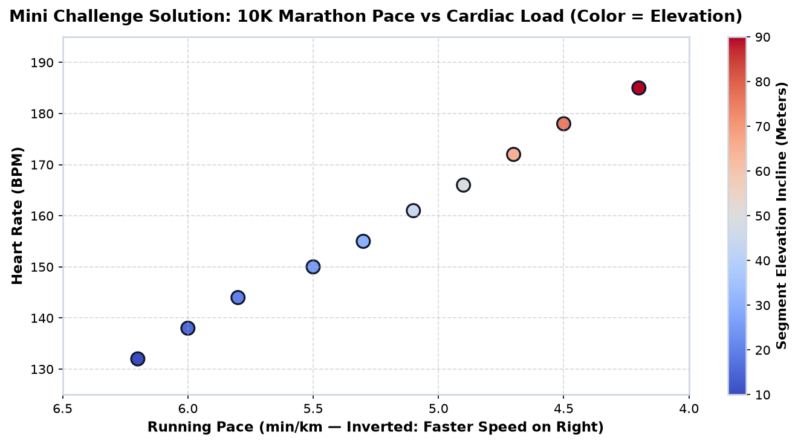
| Parameter / Method | Options & Types | Analytical Purpose |
|---|---|---|
ax.scatter(x, y) | Numeric arrays | Primary scatter plotting command |
s | Float / Array (Area in pt²) | Marker area scaling (Bubble Chart 3rd dimension) |
c + cmap | Array + Colormap string | Continuous color mapping (3rd/4th dimension) |
fig.colorbar(scatter) | Colorbar widget | Adds continuous scale ruler to the side |
alpha | 0.0 to 1.0 (float) | Resolves overplotting in dense point clouds |
edgecolors & linewidths | Hex + Float | Creates high-contrast rings around points |
ax.annotate('...', xy=...) | Text + Coordinates | Flags specific outliers and meaningful anomalies |
ax.axhline() / ax.axvline() | Scalar float | Draws regulatory and performance target thresholds |
alpha=0.3 whenever plotting 200+ observations.Agli class mein hum single continuous variable ke distribution, spread, frequency bins, aur shape (normal, skewed, bimodal) explore karenge:
plt.hist() and ax.hist() syntax.density=True) and cumulative histograms (cumulative=True).